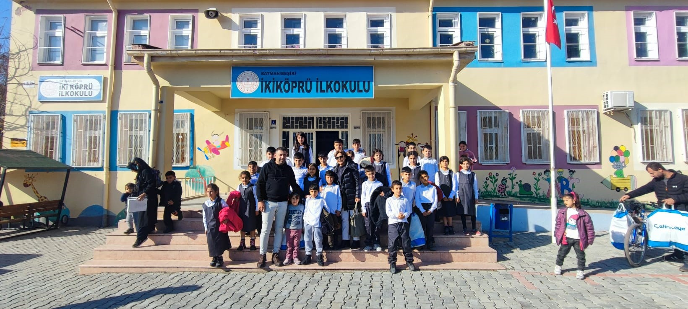
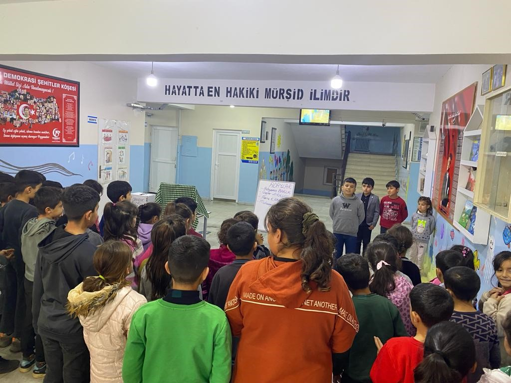
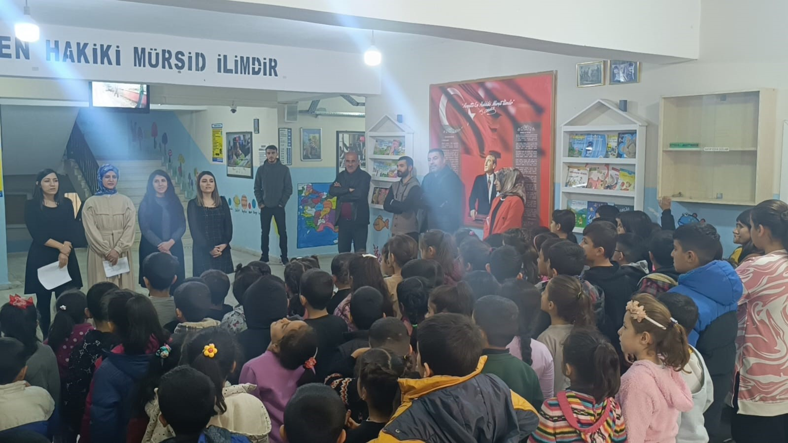

ÖĞRENCİLERİMİZ ARTIK DAHA DÜZENLİ !!!
Değerli müdürümüz Fatih EROĞLU’nun girişimiyle başlayan ‘’düzenli okul kıyafeti’’ arzusu nihayet yardımsever biri tarafından gerçekleştirildi. Son yıllarda sürekli yanımızda olan, maddi-manevi yardımını bizden esirgemeyen Saygıdeğer Behice FİDAN Hanımefendi’ye şükranlarımızı sunuyoruz.
BUNLARI BİLİYOR MUYDUNUZ?

GÖKLERİN KRALI BENİM!
- • Şahin kuşları yaklaşık olarak 50 cm uzunluğuna sahiptir.
- • Şahin kuşları ortalama 100 yıl yaşayabilmektedir.
- • Şahin kuşlarının 50 farklı türü bulunmaktadır.
- • Şahin kuşları bir insanı bile derinden yaralayabilir. Sebebi pençelerinin oldukça sert ve güçlü olmasıdır.

DEMOKRASİ ŞÖLENİ
Okulumuzda gerçekleştirilen ‘’Okul Temsilcisi’’ seçimi kurulan seçim sandığıyla ve öğrencilerin oy kullanmasıyla belirlendi. Büyük bir heyecana sahne olan seçim Muhammed AKTAŞ’ ın üstünlüğüyle sona erdi. Adaylarına fark atan
AKTAŞ :’’Çok mutluyum, okulumuzu en güzel şekilde temsil etmeye çalışacağım, herkese teşekkür ederim.’’ diyerek sözlerine son verdi.

VAR MI BENDEN GÜÇLÜSÜ?
- • Bir karıncanın ömrü ortalama 45-60 gündür.
- • Yeryüzünde bilinen 10.000 bin karınca türü yaşamaktadır.
- • Karıncalar kendi ağırlığının 20 katını kaldırabilirler.
- • Karıncalar hem etçil hem de otçul canlılardır.
